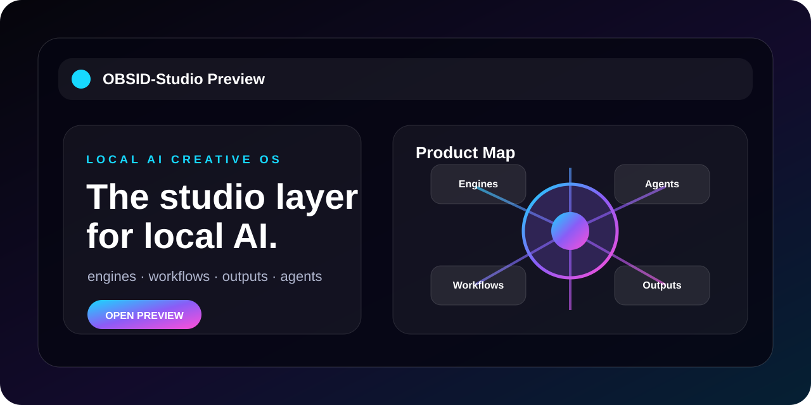
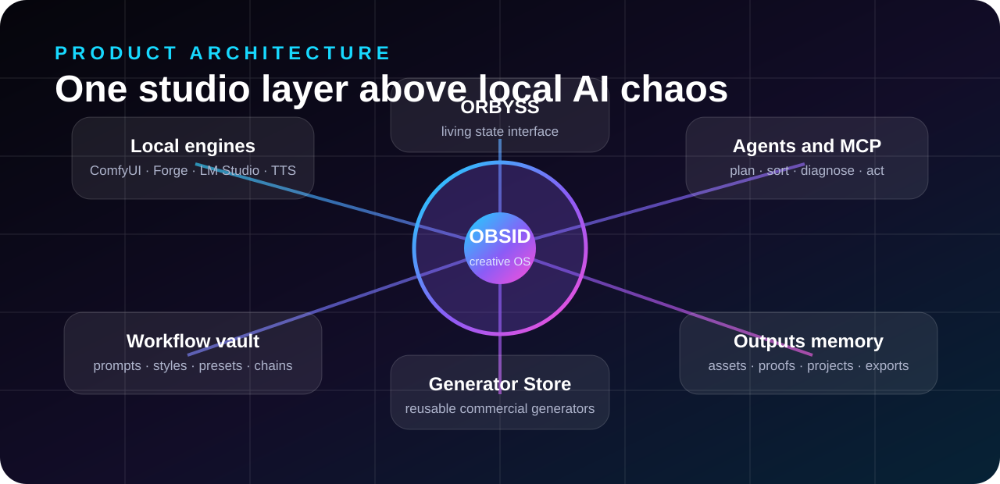
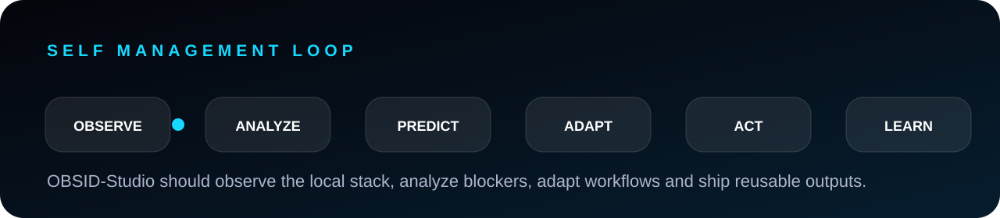

Le studio qui transforme l’IA locale en produit.
OBSID-Studio réunit moteurs locaux, workflows, outputs, agents et Generator Store dans une expérience premium compacte. Plus de chaos de ports, scripts et dossiers : un vrai cockpit créatif.


Créer, organiser, réutiliser, livrer.
OBSID ne vend pas seulement une interface. Il vend une méthode : produire avec les moteurs IA locaux, garder la mémoire de chaque output, transformer les bons réglages en workflows et sortir des livrables propres.
Une couche produit au-dessus du chaos local.
Moteurs locaux, agents, workflows, outputs, ORBYSS et Generator Store doivent fonctionner comme un système cohérent : clair, portable, prouvable, commercialisable.


Un cœur vivant, pas une boule décorative.
ORBYSS représente l’état réel du studio : repos, réflexion, génération, blocage, réparation et export. Direction : cristalline, biomécanique, lumineuse, nerveuse, premium.
Vitrine courte. Produit clair. Prochaine étape : app réelle.
La landing doit expliquer OBSID en moins de 30 secondes. L’étape suivante est une application qui prouve les moteurs, les outputs, les agents et ORBYSS en runtime réel.